Hello! My name is Yulia. And this site was made for You and our Cakes! I love to bake and share positive energy. I bake with love. As soon as it is a home bakery I have time for each cake and it’s really custom!) So, be sure that it is full of love!) And… good ingredients!!! I want to show what you and friends can have as a sentimental present for different events of your life. What can help you to make your day much better! Here you can find homemade delicious cakes, cookies and pies.
Can’t wait to make your days sweeter!)
Gallery
Here you can see some examples of our work. Every cake is made individually for each customer.
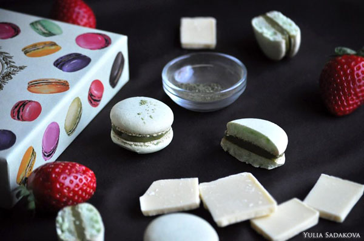
Macaroons with matcha tea
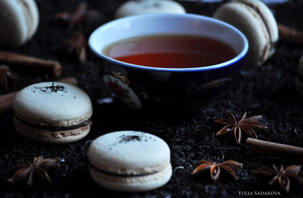
Macaroons with earl grey tea
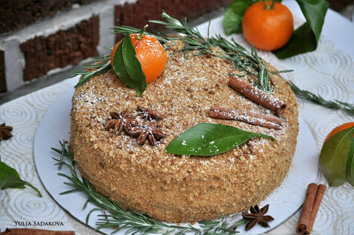
Russian Honey Cake. Recipe from my mom, so this is a try taste of this cake! And a big Favorite of our customers!
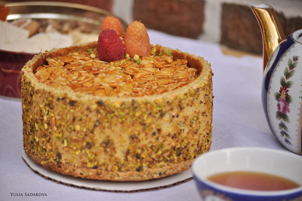
IBIZA cake. The recipe of the best patisserie Pierre Herme. This cake with pistachio dacquoise and with a light orange mousse and another mousse with homemade pistachio nougat. With almond nougatine finish. Delicious!
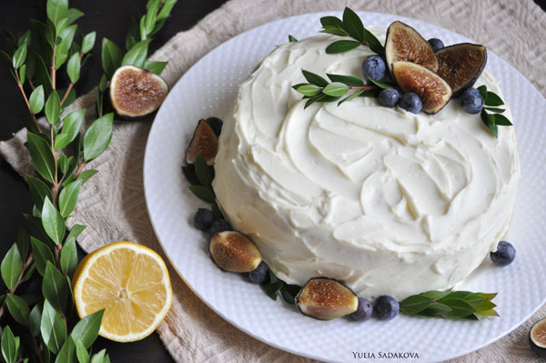
Angel cake. Light vanilla cake with lavender sirup and blueberry covered with cloud of creamAngel cake. This is a light sponge with rose water and raspberry homemade jam under a delicate cream cheese
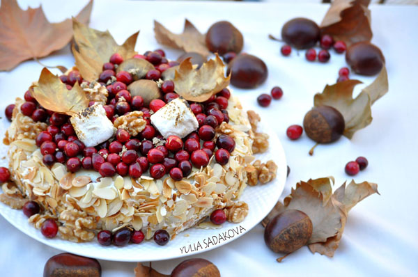
Esterhazy torte. You can find light merengue with walnuts and light butter cream with cherry flavored cognac! It is sweet and delicate
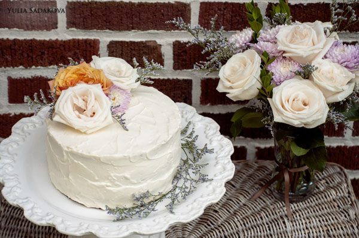
Tres leches with thin layer of cheese cream and fresh raspberry
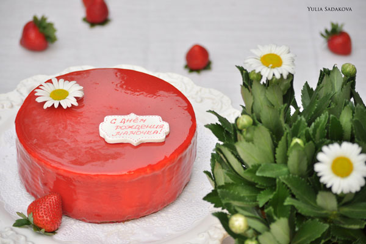
Cheesecake with homemade strawberry jam
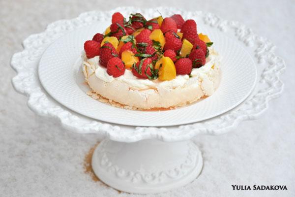
Pavlova cake.
This is a weightless like a cloud, fragile with a light cheese cream, raspberries, sunny peach and interesting note of basil
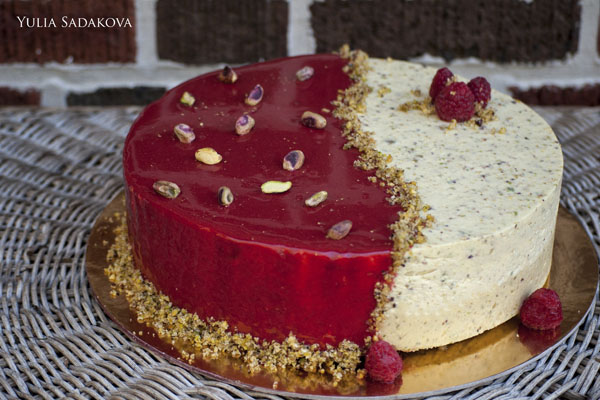
Pistachio with raspberry cake
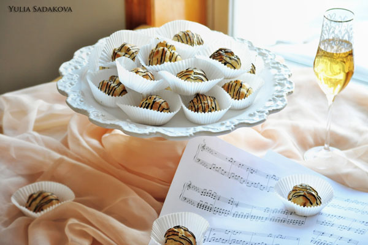
Profiteroles with an orange creme. They are incredible!!!
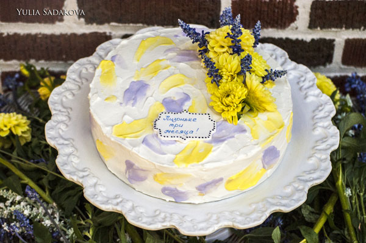
Tres leches with thin layers of cheese cream
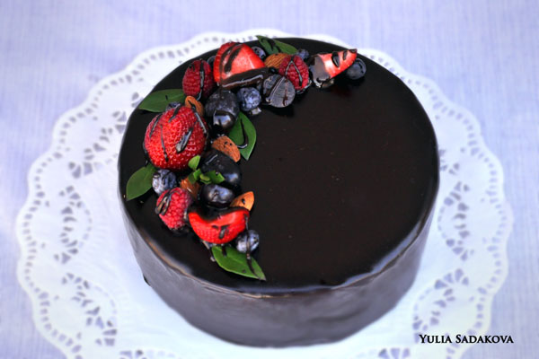
Sacher torte. It is became a traditional Austrian cake. Full of dark chocolate and thin layers of homemade apricot jam.
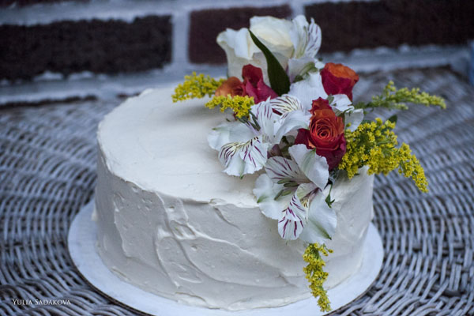
Vanilla cake. With almond sponge, bavarian vanilla mousse and cream brulee.
Our Cakes
Everybody has their special life events requiring unique and special cakes, which is exactly what we offer – cakes to perfectly fit any occasion of your life.
The desserts are made with high quality products and with our main secret ingredient – Love!
Who else can offer you Our Love? 🙂
They come complete with special notes of creativity. We use fresh berries, fruits, spices and flowers to find your personal version of the best custom cakes.
Social
I have a page on facebook named Homemade Cakes and Sweets: 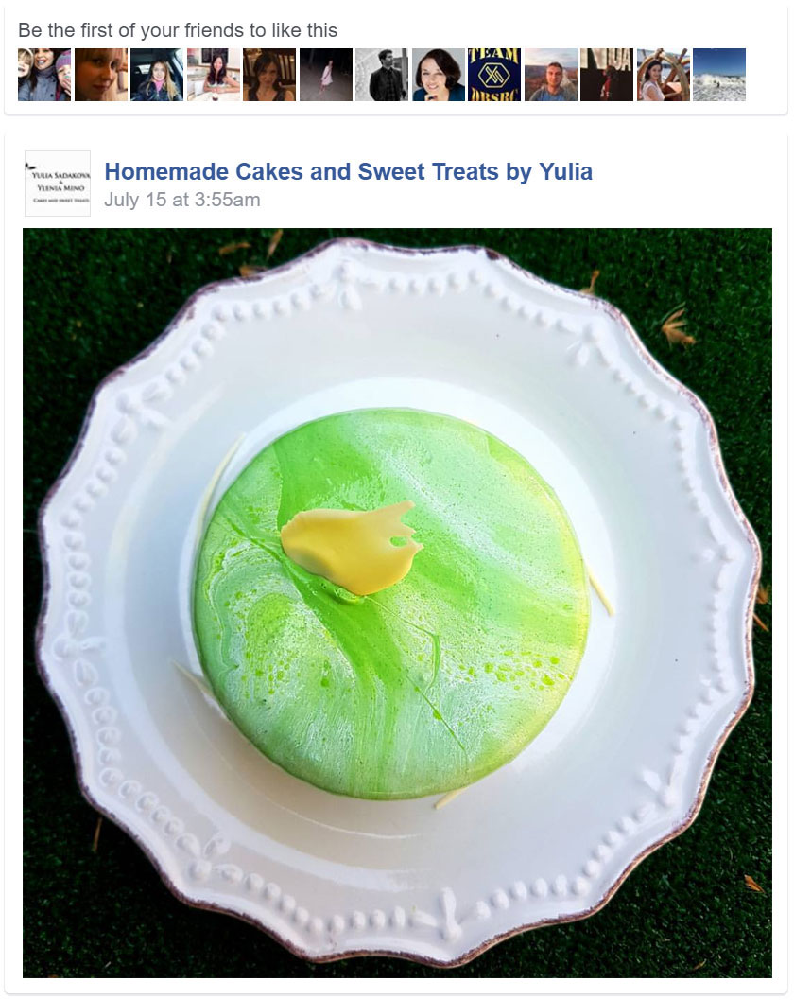
My instagram profile is sadakova_yulia: 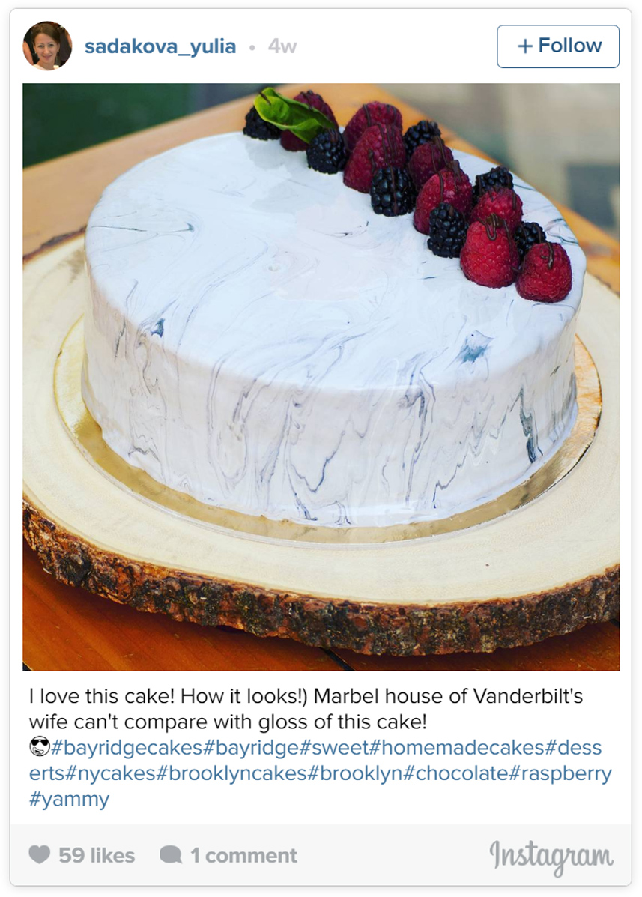